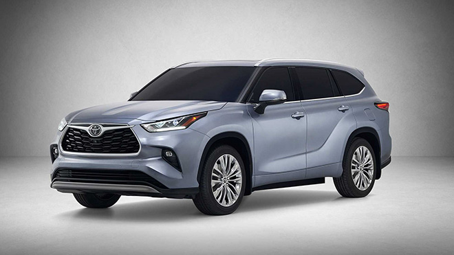
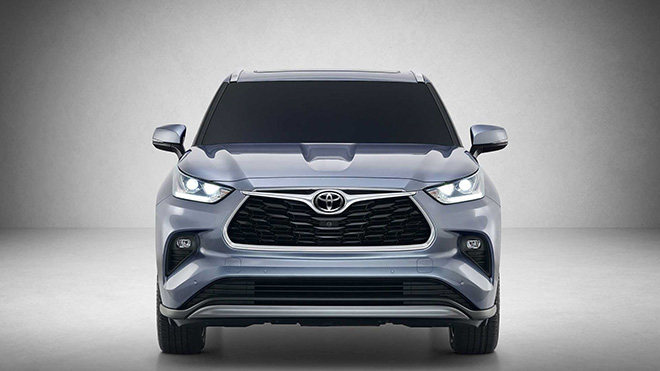
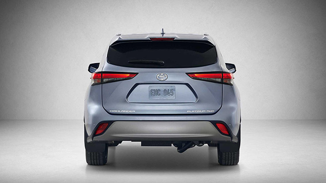
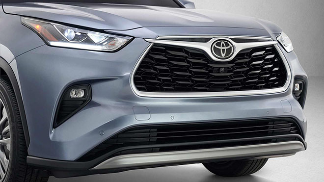
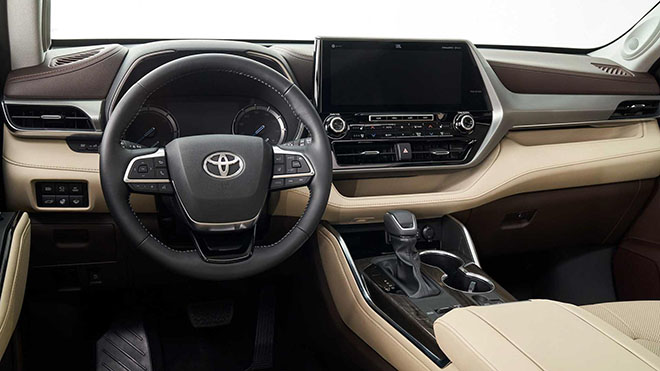
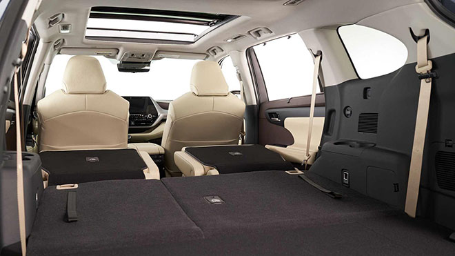

Trang chủ > Chuyên mục > Văn hoá > Toyota Highlander thế hệ mới với nhiều "sự đột phá" về thiết kế và động cơ

Toyota Highlander thế hệ mới với nhiều "sự đột phá" về thiết kế và động cơ
Trình làng Highlander thế hệ thứ 4 tại Triển lãm ô tô quốc tế New York 2019, với sự thay đổi hoàn toàn về gầm bệ, sở hữu thiết kế mới sang trọng và thu hút hơn bên cạnh thay đổi mạnh mẽ về động cơ, hệ truyền động và nâng cấp công nghệ an toàn.
Cụ thể, Toyota Highlander thế hệ mới đã chuyển sang sử dụng nền tảng khung gầm Toyota New Global Architecture (TNGA) - nền tảng đang được sử dụng trên dòng RAV4, Camry và Avalon mới.
Về thiết kế, Highlander thế hệ mới là một sự kết hợp về thiết kế giữa hai dòng RAV4 và Avalon thế hệ mới khiến nó trở nên cao cấp và ấn tượng hơn trước, cụm lưới tản nhiệt mới hình thang nhỏ gọn hơn, phía trên tích hợp thanh mạ crôm sáng bóng với logo Toyota chính giữa làm điểm nhấn.

Nắp ca-pô mới gân guốc thể thao hơn, đèn pha mới được thiết kế mảnh mai sắc sảo tích hợp đèn chiếu sáng ban ngày bên dưới. Cụm đèn sương mù được bố trí sâu vào hốc ở hai bên ở cản trước, khe hút gió được thiết kế rộng nằm bên dưới cản trước tạo nên sự bề thế và cân đối cho phần đầu Highlander mới. Thực sự thiết kế mới của Highlander rất đẹp!

Về động cơ, Highlander thế hệ mới có 02 tùy chọn động cơ xăng bao gồm V6 hút khí tự nhiên hoặc 2.5L hybrid lai giữa xăng - điện. Highlander mới vẫn chưa có thêm phiên bản hybrid cắm sạc (plug-in hybrid). Ở phiên bản động cơ V6 dung tích 3.5L hút khí tự nhiên sản sinh công suất tối đa 295 mã lực và mô-men xoắn cực đại 356Nm đi cùng khả năng kéo 2,2 tấn (5.000 pound). Động cơ sử dụng kết hợp với hộp số tự động 8 cấp (Direct Shift).

Ở phiên bản hybrid, đáng chú ý là Highlander Hybrid thế hệ mới không sử dụng máy V6 3.5L + cặp mô-tơ điện như thế hệ hiện tại, thay vào đó là nó sử dụng máy nhỏ 4 xy-lanh thẳng hàng (I4) dung tích 2.5L hút khí tự nhiên, DOHC, VVT-iE kết hợp với mô-tơ điện cho công suất tối đa 204 mã lực, mặc dù hiệu suất giảm 22% nhưng phiên bản hybrid mới đạt hiệu quả về tính tiết kiệm nhiên liệu - tăng 17% (ước tính từ 28 - 34 miles/ 1 galon tương đương ~8,3 đến 10,1 L/100km đường hỗn hơp) so với trước đó dùng mới V6
Toyota cung cấp Highlander Hybrid mới hai hệ dẫn động gồm: cầu trước (2WD) hoặc cả bốn bánh (AWD) thay vì chỉ cung cấp duy nhất hệ dẫn động bốn bánh (AWD) như trước, nhờ đó giá bán (chưa công bố) dự đoán sẽ được giảm xuống.
Toyota cho biết, Highlander 2020 có khả năng bám đường tốt hơn với lựa chọn dẫn động cầu trước hoặc ba hệ thống dẫn động bốn bánh có sẵn cho phiên bản máy V6 N/A và bản V6 Hybrid. Ở phiên bản máy xăng V6 N/A, phiên bản L, LE và XLE với hệ thống AWD (tùy chọn) có khả năng phân bổ 50% mô-men xoắn giữa trục trước và sau.

Bên cạnh đó, hệ thống Dynamic Torque Vectoring AWD với tính năng Drive Mode Select & Driveline Disconnect (tương tự RAV4 mới) được trang bị trên hai phiên bản cao cấp Limited & Platinum ngoài việc điều chỉnh phân bổ mô-men xoắn giữa bánh trước và sau, hệ thống tiên tiến này sử dụng các khớp nối đặc biệt ở trục và cầu để chủ động quản lý phân phối mô-men xoắn giữa bánh sau, bên trái và bên phải. Để tăng khả năng vận hành, người lái có thể chọn nhiều chế độ lái như: Mud & Sand hay Rock & Dirt và có thể theo dõi sự phân bổ mô-men xoắn và kiểm soát trượt trên Màn hình đa thông tin (MID).

Tương tự ngoại thất, cabin Highlander 2020 cũng được “đập đi xây lại” với thiết kế mới hoàn toàn từ ghế ngồi, bảng táp-lô đa tầng hay vô lăng. Toyota đã trrang bị hệ thống đa phương tiện mới nhất cho Highlander, hỗ trợ kết nối Apple Car Play/ Android Auto, tương thích Alexa In-Car, radio SiriusXM, kết nối Wi-Fi,... thông qua màn hình cảm ứng 8 inch tiêu chuẩn (12,3 inch trên bản cao cấp), màn hình hỗ trợ lái dạng analog với màn hình hiển thị đa thông tin (MID) 4,2 inch trong bảng điều khiển là trang bị tiêu chuẩn (7 inch bản cao cấp).
Hệ thống âm thanh cao cấp JBL là trang bị tiêu chuẩn cho các bản Limited hay Platinum. Trên bản cao cấp, “Innova Mỹ” mới có cửa sổ trời toàn cảnh, ghế lái chỉnh điện 10 hướng (8 hướng tiêu chuẩn), ghế bọc da cao cấp đục lỗ,...
Nền tảng TNGA-K cho phép Highlander 2020 tích hợp nhiều công nghệ hỗ trợ người lái, tăng sự an toàn khi giảm thiểu tác động khi va chạm. Gói trang bị an toàn Toyota Safety Sense (TSS 2.0) trên Highlander 2020 mới bao gồm hệ thống cảnh báo điểm mù, cảnh báo phương tiện cắt ngang khi lùi, cruise control điều khiển bằng radar, hệ thống theo dấu làn đường (LTA) và hỗ trợ thông tin biển báo (RSA), camera quan sát 360 độ (Toy Bird’s Eye View Camera) có trên bản Limited hay Platinum. Ngoài ra, 08 túi khí, cân bằng điện tử (VSC), kiểm soát lực kéo (TRAC), loạt phanh ABS/BA/EBD, hệ thống tạm dừng thông minh (SST) là trang bị tiêu chuẩn.
Tuỳ thuộc vào phiên bản mà Highlander mới sẽ cung cấp 7 và 8 chỗ ngồi, bất kỳ chỗ nào cũng đảm bảo sự thoải mái khi hệ thống điều hòa tự động 3 vùng độc lập là trang bị tiêu chuẩn.
Thể tích khoang hành lý 455L có thể gia tăng 2.075L khi gập phẳng cả 2 hàng ghế thứ 2 và 3 đủ để các bác chở theo cả thế giới.
Sau khi được bán ra, Toyota Highlander thế hệ mới sẽ tăng sức cạnh tranh với các đối thủ trong phân khúc SUV cỡ trung (midsize SUV/Crossover) như: Honda Pilot, Mazda CX-9, Ford Explorer hay Subaru Acsent tại thị trường Bắc Mỹ.